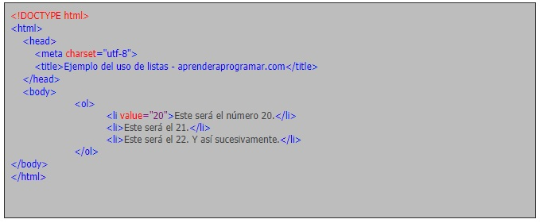
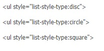
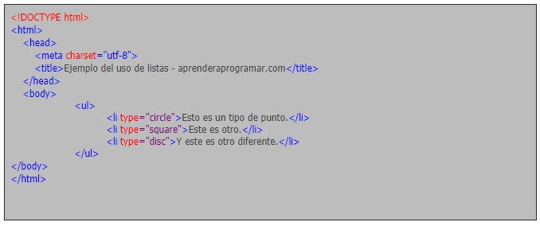

TEMA 2: LISTAS Y ENLACES
En la mayoría de los documentos HTML se usan listas para organizar el texto. El lenguaje HTML incorpora distintas formas de mostrar listas, por ejemplo con viñetas sencillas o también con letras o números. Además, para que las páginas tengan más vistosidad, se pueden colocar imágenes delante de cada párrafo.
Tipos de listas
Listas ordenadas
Si lo que pretendemos es definir una lista ordenada, lo tendremos que hacer entre las etiquetas ol (ol indica ordered list). Además, cada elemento de la lista se escribirá con la misma etiqueta que para las listas no ordenadas: li. Pero al ser listas ordenadas los símbolos por defecto serán números y éstos se irán generando automáticamente por orden, conforme escribamos nuevos elementos de la lista.
las listas ordenadas podemos hacer que el primer punto comience con el número que nosotros queramos. Lo conseguiremos gracias al atributo “value”. Los siguientes puntos que escribamos se generarán automáticamente por orden, partiendo de ese número.
Por ejemplo, si queremos que nuestra lista empiece por el número 20, podemos indicarlo en el código. Escribe este código en tu editor de texto y comprueba el resultado.
Listas No ordenadas
Las listas no ordenadas son aquellas que se encuentran entre las etiquetas ul (ul indica unordered list), etiqueta de apertura y cierre respectivamente. Si queremos añadir un nuevo punto, lo tendremos que hacer dentro de las etiquetas li.
Si no le indicamos nada a la etiqueta li, la viñeta o marca que indica que se trata de un elemento de una lista se generará de forma automática. Pero si queremos definir nosotros mismo el símbolo del punto o marca a emplear, debemos indicarlo específicamente. En el pasado se usaba el atributo “type”, hoy en día no recomendado (deprecated). Con este atributo se podía hacer que la lista estuviera definida por puntos negros (li type="disc"), por puntos con el fondo blanco (li type="circle") o por cuadrados (li type="square").
La sintaxis recomendada para indicar la apariencia se basa en usar CSS como indicamos a continuación:
Ejemplo
Bibligrafía
González, E. (s. f.). Cómo obtener claves o contraseñas de redes wifi (cracking «a por naranjas») ¿Es segura una red inalámbrica? Aprender a programar. Recuperado 11 de abril de 2021, de https://www.aprenderaprogramar.com/index.php?option=com_content&view=article&id=514:listas-html-listas-no-ordenadas-ul-ordenadas-ol-de-definiciones-tag-li-etiquetas-dl-dt-dd-cu00718b&catid=69&Itemid=192